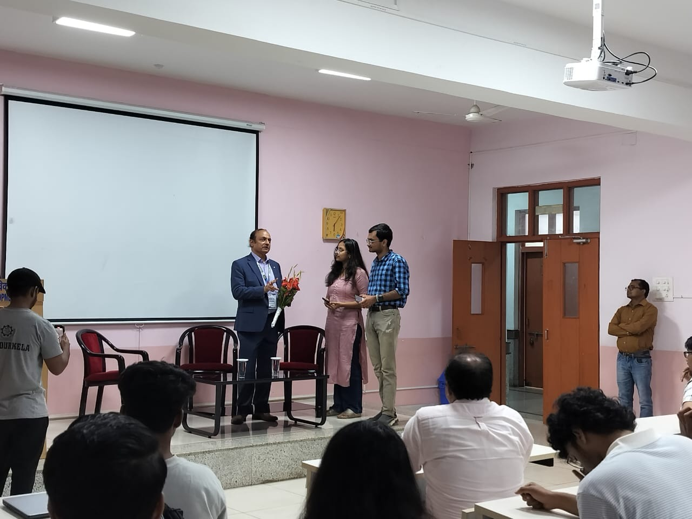
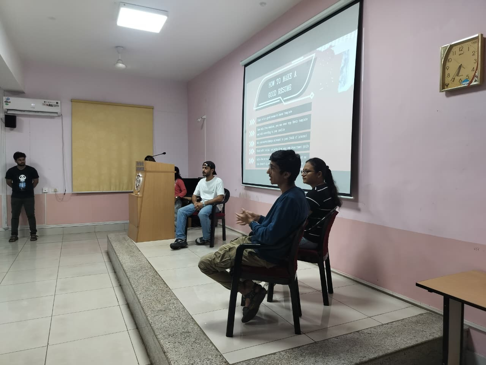
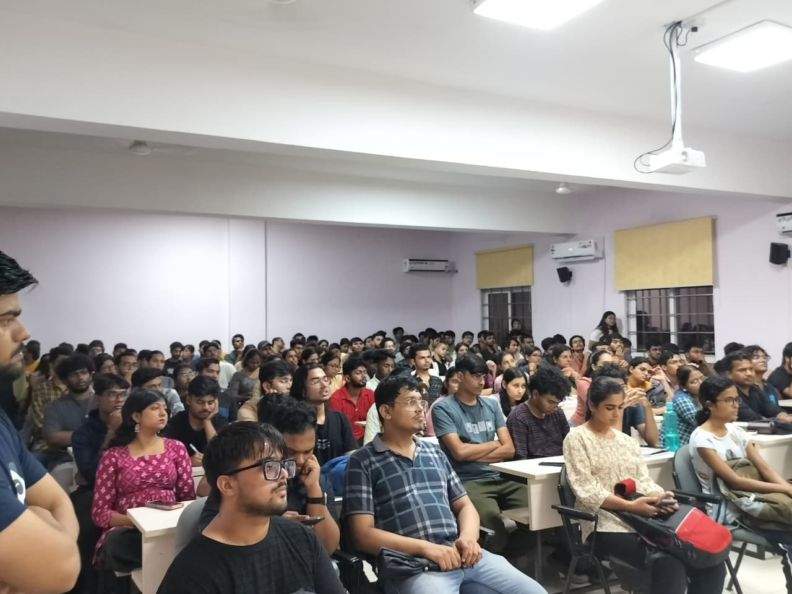
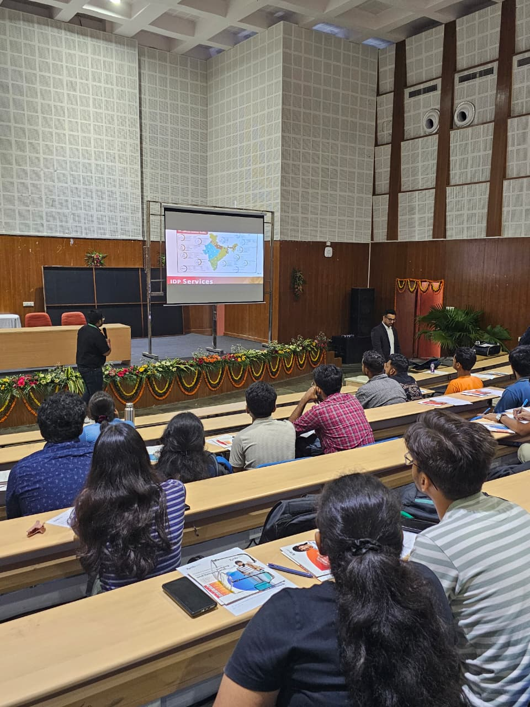
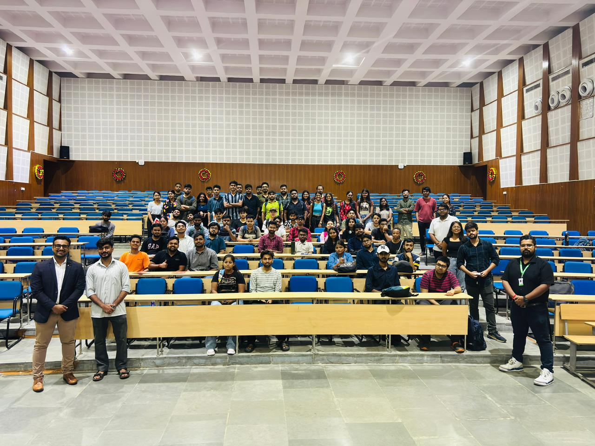
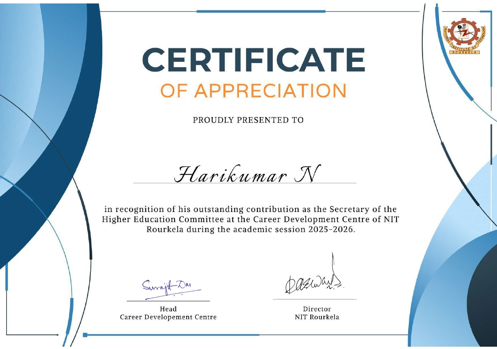

Gallery
Fieldwork, places, Responsibilities and sky.
A visual record of the places and moments behind the research, from campus and observatories to the night sky, alongside the Higher Education Committee's guidance activities for students pursuing further studies and research internships.
Gallery sections
Research & Campus
01 photograph
AstroNITR
11 photographsHigher Education & Research Internship Guidance
06 itemsAs the Secretary of Higher Education Committee which comes under the Career Development Center at NIT Rourkela, I have maintained strong relationships with leading educators and higher education consultancies to help students access guidance on further studies, research internships, and career opportunities.





